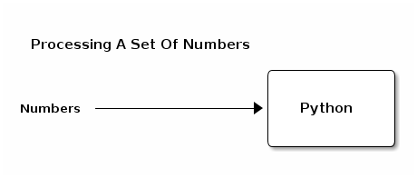
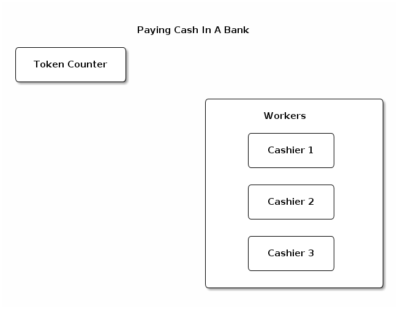
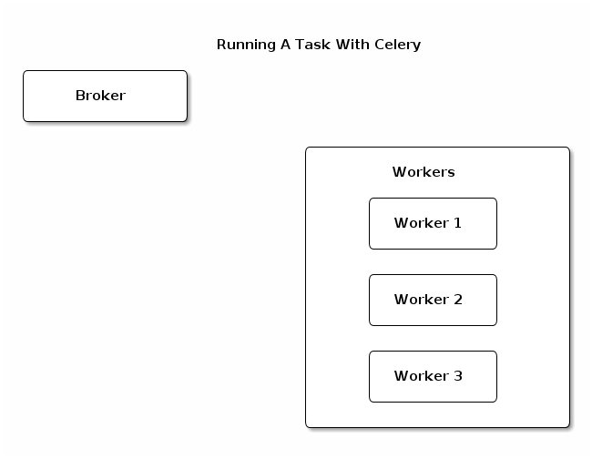

Just Queue It!
Queue Everything & Delight Everyone.
About This Talk.
Why Celery?
How Celery Works?
Running Tasks.
Canvas Workflow.
Monitoring Celery.
Why Celery?
- Running Tasks In Background.
- Automatic Retrying Failed Tasks.
- Multi Processing.
- Scheduling Periodic Work.
What Is Celery?
- It’s a task queue with focus on real-time processing, while also supporting task scheduling.
- Task queues are used as a mechanism to distribute work across threads or machines.
How Celery Works?
A Simple Queue
A Simple Python Process
Token Based Queue System
Running a task with celery
Getting Started
Install Celery
Pick a broker & install it.
Add tasks & start processing them.
Supported Brokers

Which Broker?
Low volume tasks - Any broker.
High volume tasks - RabbitMQ or Redis.
RabbitMQ
(Designed for messaging)
Advanced Routing.
Reliable delivery through acknowledgement.
Can push > 100k messages per second.
Redis
(In memory data store)
Lightweight.
Blazing fast.
Tasks
# task.py from celery import Celery app = Celery('tasks', backend='amqp', broker='amqp://guest@localhost//') @app.task() def add(x, y): return x + y
# add tasks into queue result = add.apply_async(args=[3, 4]) # or result = add.delay(3, 4)
# check result result.ready() # result.status result.get()
Workers
celery worker --help # all options celery worker -A task -l info -n foo_worker celery worker -A task -c 8 --logfile=foo.log celery worker -l info -A task -Q vip
celery inspect active celery inspect active_queues
Canvas Workflow
add.s(2, 3) # subtask - signature object add.si(2, 3) # immutable signature object result = chain(add.s(2, 2), add.s(4))() # chain result = group(add.s(i, i) for i in range(10))() # group result = chord((add.s(i, i) for i in xrange(10)), xsum.s())() # chord
Routing
# run multiple tasks add.apply_async([1, 2], queue='add_queue') sub.apply_async([3, 4], queue='sub_queue')
# run multiple workers celery worker -l info -A tasks -Q add_queue celery worker -l info -A tasks -Q sub_queue
Monitoring.
Flower: Real-time monitor & web admin for Celery.
Web hooks
Integrating with other languages/frameworks
Call a task using GET/POST request & retrieve result.
curl -X POST http://localhost:5555/api/task/async-apply/my_app.test_task
Where To Go From Here?
References: Celery Docs, FLower REST API
Articles: Best Practices, Gotchas for Celery
Talks: Distributed Canvas Workflow